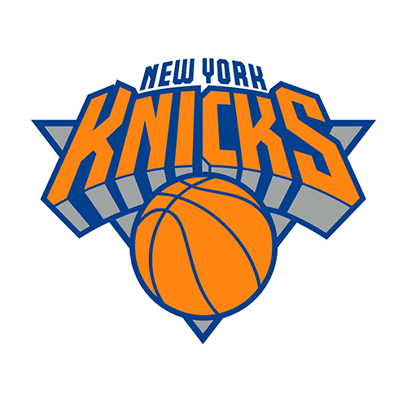
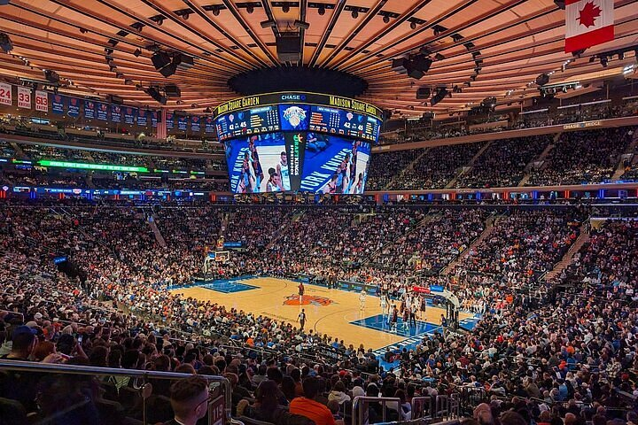

I New York Knicks sono una delle franchigie più storiche della NBA. Fondati nel 1946, sono tra i pochissimi membri fondatori della lega ad aver mantenuto sia il nome originale che la stessa sede fin dall'inizio. Giocano le loro partite casalinghe al Madison Square Garden, nel cuore di Manhattan, in uno dei palazzetti più iconici di tutto il mondo.

I New York Knicks contano nella loro storia 3 titoli NBA vinti su un totale di 9 Finali NBA giocate. I primi 2 anelli risalgono al 1970 e al 1973, mentre il terzo lo hanno conquistato proprio quest'anno, dopo più di 50 anni di "digiuno": è stata la prima finale raggiunta dalla squadra negli anni 2000, in quanto l'ultima era stata disputata nel 1999 contro i San Antonio Spurs.
Le finali NBA 2026 si sono svolte dal 4 fino al 14 giugno 2026. I New York Knicks (NYK) hanno affrontato i San Antonio Spurs (SAS), squadra guidata dal giovane talento francese Victor Wembanyama, classe 2004. La serie si è conclusa sul risultato di 4 a 1 per la squadra di New York, incoronandola campione indiscussa della NBA. Quella del 14 giugno è una data storica per i tifosi, che hanno riempito le strade e le piazze di New York celebrando una vittoria che ormai mancava da mezzo secolo.
La serie si è conclusa in 5 partite, con la squadra di New York che chiude i giochi per 4-1 vincendo in casa l'ultima partita. Nella seguente tabella sono riportati i risultati delle 5 gare.
| Gara 1 | Gara 2 | Gara 3 | Gara 4 | Gara 5 | |
|---|---|---|---|---|---|
| NYK | 105 | 105 | 111 | 107 | 94 |
| SAS | 95 | 104 | 115 | 106 | 90 |
Al termine delle 5 gare è stato assegnato il trofeo alla squadra di New York. I 2 giocatori che si sono distinti di più in questa serie finale sono stati:
Jalen Brunson inoltre, è stato decretato MVP (Most Valuable Player) delle finali, ottenendo così uno dei premi individuali più prestigiosi e ambiti da tutti i giocatori della lega.